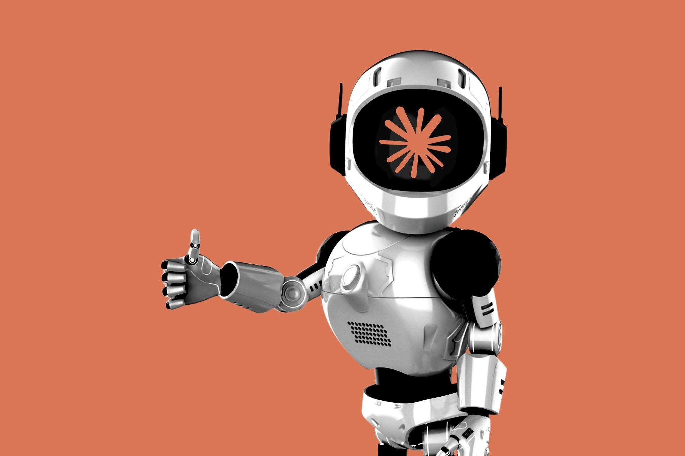

Во вторник на презентации в Сан-Франциско Anthropic представила сразу три продукта для нетехнических сотрудников: Claude Meetings, Claude Sheets и Claude Whiteboards. Это первое движение компании за пределы «территории программистов», где она чувствовала себя как дома после успеха Claude Code. В компании признают: «трения при внедрении ИИ для нетехнарей всё ещё много» — и новый пакет призван это трение убрать.
Как это работает: Claude подключается к рабочим встречам, ведёт протокол, превращает обсуждённое в план и конкретные задачи. На общедоступной доске Whiteboards он раскладывает идеи команды в схему, а в Sheets редактирует таблицы вместе с сотрудниками. Есть и демонстрационная функция: готовую презентацию ИИ пересобирает в минутное объясняющее видео.
Для Anthropic это ещё и ответ на конкурентов: The Verge отмечает, что OpenAI, SpaceXSI и Meta давно копируют её стратегии — от агентских инструментов до корпоративных пакетов. Теперь же и сама Anthropic выходит на поле офисных «киллер-аппов», где Microsoft Copilot и Google Workspace сидят уже несколько лет.
Отдельной страницы с официальным анонсом на сайте anthropic.com на момент публикации ещё нет — в новостной ленте компании висят только релизы Claude Fable 5.2 и Mythos 5.2 за тот же день. Факты собраны по репортажам The Verge и TechCrunch с мероприятия.